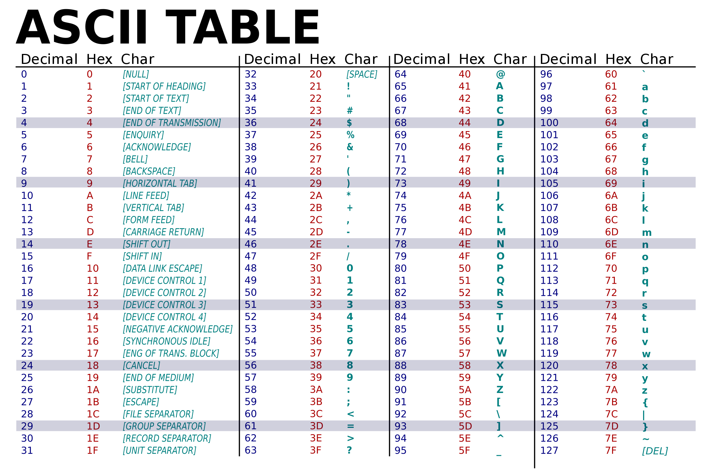

Introduction
Outcomes
- What is C++
- Hello World Program in C++
- Variables && Data Types
- Functions
- Header Files
- Math Operations
- Control Statements && Ligical Operators
- Loops
- For loop
- While loop
- Recursion
- Pointers && References
- Constants
- Arrays
- Bit-wise Operations
What is C++

C++ is a Strongly Typed general-purpose programming language created by Bjarne Stroustrup at Bell Labs in 1980.
At first it was built as a pre-processor for the C programming language with the name of “C with classes” as one of its inspirations was the Simula programming language.
For more information check out the Wikipedia page about C++: https://en.wikipedia.org/wiki/C%2B%2B
Hello World Program in C++
So let’s write the first program in C++!
// main.cpp
#include <iostream>
int main()
{
std::cout << "Hello, World!" << std::endl;
return 0;
}
For now all we need to do is to write our in the main function
How to run the code
First we took that C++ is a compiled language .. so we need some sort of a compiler to be able to run our code.
We have a variety of options like (for example):
- GCC [GNU C Compiler] (in Windows it is called MinGW)
- Clang/LLVM
- Visual Studio Community (for Windows users)
- TCC [Tiny C Compiler]
- 8c
- Intel C++
- IBM XLC++
- Turbo C++
For arm bases computing:
- Keil C++ compiler
- Texas Instruments code generation tools for C/C++
- MPLAB XC++ Compiler
If you choose Visual Studio you can simply run the project through the run button.
In this tutorial we will use GCC in the terminal.
GCC provides a program called g++, this is the C++ compiler!
Let’s Compile!
In the terminal we will write the following
$ g++ NAME_OF_FILE_CODE -o NAME_OF_OUTPUT_FILE
In our case we wrote a file called main.cpp .. so we will write:
$ g++ main.cpp -o main
Now if we look at our directory we will find two files main.cpp && main.
To run the program we write:
$ ./main
Hello, World!
Any code we will write we will make the same steps
References
Variables && Data Types
So what is a variable?
Simply you can imagin it as a box in which we store stuff.
You may ask what is this “ stuff “ acctually means.
It is called data, when we write a program in C++ we want to be able to use data; most of what programming is about is actually using data, we manipulate data, that’s what we do.
In other words variables allow us to name a piece of data we store in memory so we can use it.
What matters is not what the types do to our variables but the size is the important thing about them.
Let’s discuss it more in the next page!
Type System in C++
Before we dive into type system let’s take a brief look at what we have as types in the language.
Rule to follow
In C++ we write a variable as follows:
DATA_TYPE VARIABLE_NAME = VALUE;
We can only declare a variable in one line and give it a value in other place in the code like so.
DATA_TYPE VARIABLE_NAME;
...
...
VARIABLE_NAME = VALUE;
Let’s take an example; we can declare a variable of type int to showcase the usage:
#include <iostream>
int main()
{
int number = 3;
std::cout << number << std::endl;
return 0;
}
Let’s run the code:
$ g++ main.cpp -o main && ./main
3
BTW you can get rid of std:: in front of commands by using namespace std; but I don’t recommend it ❌
#include <iostream>
using namespace std;
int main()
{
cout << "Hi" << endl;
}
Also the return statement is optional in main.
Think a little about this code ⁉️:
#include <iostream>
int main()
{
int number;
std::cout << number << std::endl; // ??
number = 5;
std::cout << number << std::endl;
return 0;
}
Types in C++
In short (as mentioned before) what types do to variables don’t really matters, what matters is the size of the type that is allocated in memory.
The following is a list of most data types in the language with its size:
char- - - - - 1 bytebool- - - - - 1 byteshort- - - - 2 bytesint- - - - - - 4 bytesfloat- - - - 4 byteswchar_t- - 4 bytesdouble- - - 8 byteslong- - - - - 8 bytes
A very common way is to use the sizeof operator to know the size in bytes.
#include <iostream>
int main()
{
std::cout << sizeof int << std::endl;
}
Also we can use it as follows:
#include <iostream>
int main()
{
std::cout << sizeof(int) << std::endl;
}
We can also save some headaches by #include <cinttypes>.
It gives us a variety of types to use indicated by size of bits like uint8_t.
Datatypes Modifiers

! Note: be smart while using these modifiers! there’s no such thing as long float !
Try out this code:
// C++ program to sizes of data types
#include <iostream>
using namespace std;
int main()
{
cout << "Size of char : " << sizeof(char) << " byte" << endl;
cout << "Size of int : " << sizeof(int) << " bytes" << endl;
cout << "Size of short int : " << sizeof(short int) << " bytes" << endl;
cout << "Size of long int : " << sizeof(long int) << " bytes" << endl;
cout << "Size of signed long int : " << sizeof(signed long int) << " bytes" << endl;
cout << "Size of unsigned long int : " << sizeof(unsigned long int) << " bytes" << endl;
cout << "Size of float : " << sizeof(float) << " bytes" << endl;
cout << "Size of double : " << sizeof(double) << " bytes" << endl;
cout << "Size of wchar_t : " << sizeof(wchar_t) << " bytes" << endl;
return 0;
}
Possible output on x86_64 system:
Size of char : 1 byte
Size of int : 4 bytes
Size of short int : 2 bytes
Size of long int : 8 bytes
Size of signed long int : 8 bytes
Size of unsigned long int : 8 bytes
Size of float : 4 bytes
Size of double : 8 bytes
Size of wchar_t : 4 bytes
More Examples
Let’s use char:
#include <iostream>
int main()
{
char letter = 'M';
std::cout << letter << std::endl; // M
}
// note that the character case we use single quotes!
Think About This Code
#include <iostream>
int main()
{
int letter1 = 'A';
char letter2 = 65;
std::cout << letter1 << ", " << letter2 << std::endl; // ??
}

ASCII Reference: https://en.wikipedia.org/wiki/ASCII
ASCII Table: https://www.asciitable.com/
Unicode Reference: https://en.wikipedia.org/wiki/Unicode
Funny Webite: https://home.unicode.org/
! ASCII stands for: American Standard Code for Information Interchange !
Let’s Think About The Following Code
#include <iostream>
int main()
{
double a = 5.5;
float b = 5.5;
std::cout << sizeof(a) << ", " << sizeof(5.5) << std::endl; // 8, 8
std::cout << sizeof(b) << ", " << sizeof(5.5) << std::endl; // 4, 8 ??!
std::cout << sizeof(5.5f) << std::endl; // 4
// from this code we know that assigning 5.5 without an 'f' unit
// will assign a double not a float
}
So the fix for this code is:
...
float b = 5.5f;
...
Functions
I’m assuming that you know what functions are used for.
How To Write A Function
RETURN_TYPE FUNCTION_NAME()
{
BLOCK_OF_CODE;
}
RETURN_TYPE FUNCTION_NAME(ARGS)
{
BODY_OF_THE_FUNCTION;
}
Note that if we wrote it like this:
RETURN_TYPE FUNCTION_NAME(ARGS);
RETURN_TYPE FUNCTION_NAME();
We are not give it a body; this is called a prototype in which we use the function signature only.
But note that the function should have a body.
Example
int add(int x, int y)
{
return x + y;
}
char getNextChar(char a)
{
return a + 1;
}
We can call these functions in main:
int main()
{
std::cout << add(1, 2) << std::endl; // 3
std::cout << getNextChar('a') << std::endl; // b
}
What About A Function With No Return Type?
In this case we use the void keyword.
void fn()
{
// ...
}
An example:
#include <iostream>
char C = 'M';
inline void increment() // `inline` is for compiler optimisation
{
C++; // lol
}
int main()
{
std::cout << C << std::endl;
increment();
std::cout << C << std::endl;
}
Function Overloading
The Meaning of overloading is we can create multiple functions with the same name but with a different sifnature.
For example we created a function that adds 2 ints, we can create another one for doubles, or a third one that adds 3 ints.
#include <iostream>
inline int add(int n1, int n2, int n3)
{
return n1 + n2 + n3;
}
inline int add(int n1, int n2)
{
return n1 + n2;
}
inline double add(double n1, double n2)
{
return n1 + n2;
}
int main()
{
std::cout << add(1, 2) << std::endl; // 3
std::cout << add(1.1, 4.0) << std::endl; // 5.1
std::cout << add(1.3, (double)4) << std::endl; // 5.3
std::cout << (int)add(1.5, 4.3) << std::endl; // 5
}
Function Prototyping
In C++, the code of function declaration should be before the function call. However, if we want to define a function after the function call, we need to use the function prototype. For example:
// function prototype
void add(int, int); // function prototyping
int main() {
// calling the function before declaration.
add(5, 3);
return 0;
}
// function definition
void add(int a, int b) {
cout << (a + b);
}
! Example:
// using function definition after main() function
// function prototype is declared before main()
#include <iostream>
// function prototype
int add(int, int);
int main() {
int sum;
// calling the function and storing
// the returned value in sum
sum = add(100, 78);
std::cout << "100 + 78 = " << sum << std::endl;
return 0;
}
// function definition
int add(int a, int b) {
return (a + b);
}
Header Files
For now we have been typing in one file, but this is a bad practice on the long run, so we need to modulize our code.
Do We Have Multiple Types Of Files In C++?
Yes! Let me explain … the first reason we have to deal with many number of files is to organise our code, and this has some benefits one of them is maintainability.
Compiling C programs requires you to work with five kinds of files:
-
Source files: These files contain function definitions, and have names which end in
.cby convention. Note:.ccand.cppare C++ files; not C files. e.g.,foo.c -
Header files: These files contain function prototypes and various pre-processor statements. They are used to allow source code files to access externally-defined functions. Header files end in
.hby convention. e.g.,foo.h -
Object files: These files are produced as the output of the compiler. They consist of function definitions in binary form, but they are not executable by themselves. Object files end in
.oby convention, although on some operating systems (e.g. Windows, MS-DOS), they often end in.obj. e.g., foo.o foo.obj -
Binary executables: These are produced as the output of a program called a “linker”. The linker links together a number of object files to produce a binary file which can be directly executed. Binary executables have no special suffix on Unix operating systems, although they generally end in
.exeon Windows. e.g.,foofoo.exe -
Libraries: A library is a compiled binary but is not in itself an an executable (i.e., there is no
main()function in a library). A library contains functions that may be used by more than one program. A library should ship with header files which contain prototypes for all functions in the library; these header files should be referenced (e.g;#include <library.h>) in any source file that uses the library. The linker then needs to be referred to the library so the program can successfully compiled. There are two types of libraries: static and dynamic.-
Static library: A static library (
.afiles for POSIX systems and.libfiles for Windows — not to be confused with DLL import library files, which also use the.libextension) is statically built into the program . Static libraries have the advantage that the program knows exactly which version of a library is used. On the other hand, the sizes of executables are bigger as all used library functions are included. e.g.,libfoo.afoo.lib -
Dynamic library: A dynamic library (
.sofiles for most POSIX systems,.dylibfor OSX and.dllfiles for Windows) is dynamically linked at runtime by the program. These are also sometimes referred to as shared libraries because one library image can be shared by many programs. Dynamic libraries have the advantage of taking up less disk space if more than one application is using the library. Also, they allow library updates (bug fixes) without having to rebuild executables. e.g.,foo.sofoo.dylibfoo.dll
-
Check out this website for more info: https://riptutorial.com/c/example/4361/file-types.
In this book we will use only header files and source files.
What Is A Header File?
From the name it’s just a file, however it is written in a specific format to make the compiler able to work with it.
Header files are not some thing new, acctually we have been using one form the beginning it (iostream).
iostream is a header file that contains some code we want to use it, so we write #include <iostream> at the “head” of our file (that’s a way to remember the name).
In header files we mostly put the signature of our functions.
First let’s make sure we have 3 files in our folder: myfile.h, myfile.cpp and main.cpp. We will work on the previous “add” program.
In the header file (myfile.h) put your necessary includes and signatures.
// myfile.h
#pragma once // I'm assuming you are running C++17 at least
inline int add(int, int, int);
inline int add(int, int);
inline double add(double, double);
In the source file implement your functions.
// myfile.cpp
#include <myfile.h>
inline int add(int n1, int n2, int n3)
{
return n1 + n2 + n3;
}
inline int add(int n1, int n2)
{
return n1 + n2;
}
inline double add(double n1, double n2)
{
return n1 + n2;
}
Now include your header file in main.cpp.
#include <myfile.h>
#include <iostream>
int main()
{
std::cout << add(1, 2) << std::endl;
std::cout << add(1.1, 4.0) << std::endl;
std::cout << add(1.3, (double)4) << std::endl;
std::cout << (int)add(1.5, 4.3) << std::endl;
}
To run this new setup you need to feed the compiler with 2 files instead of one.
$ g++ main.cpp myfile.cpp -o main
$ ./main # this makes us run the code
3
5.1
5.3
5
This is the fast way to do it.
Please do your study at header include gurds, I’m not going to explain them here! https://en.wikipedia.org/wiki/Include_guard
Math Operations
C++ comes with a math.h header file that has functions like sin, cos and sqrt.
Try To Solve This Question Using Code
Q: Write a program that calculates the hypot of a triangle (use what you’ve learned so far).
Solution
// hypot.h
inline double hypot(double a, double b);
// hypot.cpp
#include <math.h>
#include "hypot.h"
inline double hypot(double a, double b)
{
return sqrt(a * a, b * b);
}
// main.cpp
#include <iostream>
#include "hypot.h"
int main()
{
std::cout << hypot(3, 4) << std::endl; // 5
}
Control Statements && Ligical Operators
Nothing new here! All we need to know the logical operator and the syntax to write them.
Types Of Control Statements
We have 2 types:
- if/else
- switch
Switch Statement
We use switch to take action from a given number (yes switch only applies to integral types).
The syntax is as follows:
switch (NUM_TYPE_VARIABLE)
{
case VAL_FOR_CASE_1:
// code
break;
case VAL_FOR_CASE_2:
// code
break;
...
default: // note that the `default` section of `switch` is optional
// code
break;
}
Dummy examples:
#include <iostream>
int main()
{
short x = '1';
switch (x)
{
case 0:
// code
break;
case 1:
// code
break;
case '2': // note that we can check for `char` types as they are integral types
// code
break;
}
}
If/Else
There are 2 ways to write if: the one-line way and the block way
// one-line way
if (EXP)
CODE;
else
CODE;
// block way
if (EXP)
{
// code
}
else
{
// code
}
// Note we can mix between both
if (true)
{
// code
}
else CODE;
if (true) CODE;
else
{
// code
}
Note:
else if (EXP) ...
is the same as
else
{
if (EXP) ...
}
Logical Operators
- AND ->
&& - OR ->
||
[ NOT -> ! ]
Note that the NOT operator is not logical one but a bit-wise one.
Exercise: Improve the last question by accepting only positive values.